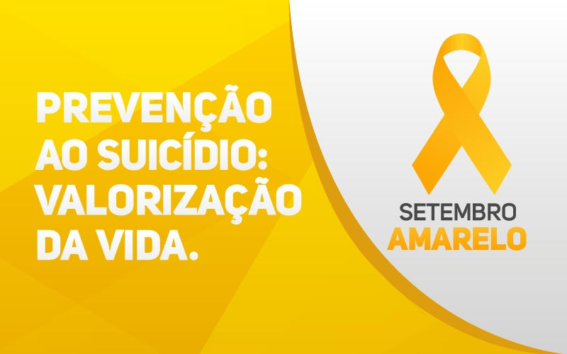

Falar é a melhor solução - Valorize a vida
O Setembro Amarelo é uma campanha brasileira de conscientização sobre a prevenção do suicídio, com o objetivo de alertar a população sobre a realidade desse problema no Brasil e no mundo, suas formas de prevenção e a importância de se falar abertamente sobre o tema. A campanha ocorre durante todo o mês de setembro, tendo como marco o dia 10 de setembro, Dia Mundial de Prevenção ao Suicídio, instituído pela Organização Mundial da Saúde (OMS).
A cor amarela foi escolhida por simbolizar luz, esperança e vida. O movimento teve início em 2015, promovido pelo Centro de Valorização da Vida (CVV), Conselho Federal de Medicina (CFM) e Associação Brasileira de Psiquiatria (ABP), e desde então tem crescido e ganhado cada vez mais apoio da sociedade, empresas, escolas e instituições públicas.
Dados importantes: Segundo a Organização Mundial da Saúde, mais de 700 mil pessoas morrem por suicídio a cada ano no mundo, o que representa uma morte a cada 40 segundos. No Brasil, são registrados cerca de 14 mil óbitos por ano, tornando o suicídio uma questão urgente de saúde pública que precisa ser discutida sem tabus.
Durante muito tempo, o suicídio foi tratado como um tabu, cercado de silêncio, preconceito e estigma. Essa dificuldade em abordar o tema contribui para que pessoas em sofrimento não busquem ajuda. O Setembro Amarelo vem justamente para quebrar esse silêncio, mostrando que falar sobre suicídio não aumenta o risco, mas sim pode salvar vidas.
Estudos científicos demonstram que a maioria das pessoas que pensa em suicídio dá sinais de seu sofrimento, e quando encontram uma rede de apoio acolhedora e sem julgamentos, podem reconsiderar suas decisões. Por isso, conversar abertamente, oferecer escuta ativa e buscar ajuda profissional são atitudes fundamentais.
É importante estar atento a mudanças significativas no comportamento de pessoas próximas. Alguns sinais podem indicar que alguém está passando por momento de crise e necessita de apoio: isolamento social, mudanças drásticas de humor, expressões de desesperança, frases como "seria melhor se eu não estivesse aqui", piora no desempenho escolar ou profissional, descuido com a aparência pessoal e despedida de pessoas próximas.
Outros sinais incluem o uso abusivo de álcool e drogas, comportamentos impulsivos ou de risco, e até mesmo comentários diretos sobre querer morrer ou acabar com o próprio sofrimento. É fundamental levar esses sinais a sério e não minimizar o sofrimento da pessoa.
Se você percebe que alguém próximo está passando por dificuldades emocionais, o primeiro passo é criar um espaço seguro para conversação. Escute sem julgar, demonstre empatia e mostre que você se importa. Evite frases minimizadoras como "isso vai passar" ou "outras pessoas passam por coisas piores".
Pergunte diretamente se a pessoa tem pensado em se machucar ou em suicídio. Essa pergunta não vai plantar a ideia na cabeça de ninguém, mas pode abrir espaço para que ela se sinta acolhida e compartilhe seu sofrimento. Incentive a busca por ajuda profissional e, se possível, ajude a pessoa a acessar serviços de saúde mental.
Centro de Valorização da Vida - CVV
Atendimento gratuito 24 horas por dia, 7 dias por semana
Chat e e-mail: www.cvv.org.br
CAPS - Centros de Atenção Psicossocial
Busque a unidade mais próxima em sua cidade
SAMU: 192 | Bombeiros: 193
Diversos fatores podem aumentar o risco de suicídio, como transtornos mentais (depressão, transtorno bipolar, esquizofrenia, dependência química), tentativas anteriores, histórico familiar, situações de violência, perdas significativas, isolamento social e acesso a meios letais. É importante identificar esses fatores para atuar preventivamente.
Por outro lado, existem fatores de proteção que podem reduzir o risco: bom relacionamento familiar e social, acesso a tratamento de saúde mental, desenvolvimento de habilidades para lidar com problemas, senso de propósito de vida, espiritualidade e participação em atividades comunitárias. Fortalecer esses aspectos é fundamental na prevenção.
A prevenção do suicídio é uma responsabilidade coletiva. Escolas devem promover educação socioemocional e criar ambientes acolhedores. Empresas precisam investir em saúde mental dos trabalhadores e oferecer suporte adequado. A mídia deve abordar o tema de forma responsável, evitando a romantização ou a descrição detalhada de métodos.
Os serviços de saúde devem estar preparados para acolher e tratar pessoas em crise, garantindo acesso rápido e qualificado. A sociedade como um todo precisa combater o estigma relacionado aos transtornos mentais e criar uma cultura de cuidado, empatia e valorização da vida.
Pessoas que convivem com alguém em sofrimento ou que trabalham diretamente com prevenção ao suicídio também precisam de cuidado e suporte. É importante estabelecer limites saudáveis, buscar apoio de outros profissionais ou familiares, e não hesitar em procurar ajuda quando necessário. Cuidar da própria saúde mental é fundamental para poder ajudar o outro.
A boa notícia é que o suicídio pode ser prevenido. Com tratamento adequado, que pode incluir psicoterapia, uso de medicamentos quando necessário, e uma rede de apoio sólida, é possível superar crises e recuperar o desejo de viver. Muitas pessoas que tentaram suicídio relatam, depois de receberem ajuda, que estão felizes por terem sobrevivido.
A recuperação é um processo que leva tempo e requer paciência, mas é absolutamente possível. Cada história de superação reforça a importância da prevenção e do acolhimento. O Setembro Amarelo nos lembra que a vida sempre vale a pena e que há esperança mesmo nos momentos mais difíceis.
Se você está passando por um momento difícil, saiba que você não está sozinho. Busque ajuda. Converse com alguém de confiança. Procure um profissional de saúde mental. Ligue para o CVV (188). A vida pode melhorar, e você merece ter a oportunidade de vivenciar isso.